更新日 : 2016/01/31
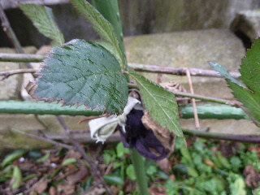
枝がブラブラしてたので、支柱に紐で結びました。
ちょっと枝が多くて重いかな？って部分はバッサリと切ったので、全体的にスッキリしました。
ごちゃごちゃ込み入ると毛虫が発生する気がするので、少な目くらいが丁度いいかな。
更新日 : 2016/05/01
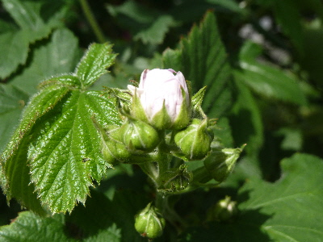
今年も沢山実が出来そうです。
ブラックベリーは簡単に育てれていいですね。
食べるのも簡単だと文句ないんだけどなー。
更新日 : 2016/07/03
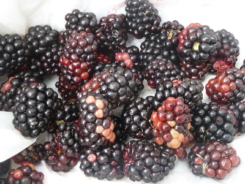
ブラックベリーが出来たんですけど、なんか色がいまいちですね。
なんで白い部分があるのかな？美味しくなさそう。
ジャムにするのであんまり気にする必要はないかな。
更新日 : 2016/07/23
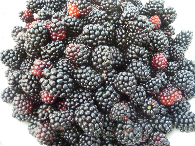
今日もボールいっぱい採れました。
沢山消費したいので、ジャムにしてから牛乳に混ぜて飲んでます。
更新日 : 2017/07/02
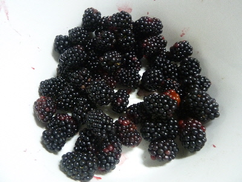
今年初の収獲です。早速ジャムにしました。
食パンを買って、付けて食べようと思っています。
2018/07/01
色が黒くなって食べごろになりました。
ジャム作りスタートです。ジャムを食べるために食パンを買おうかな。
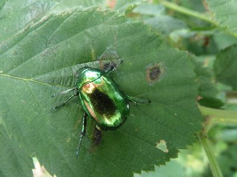
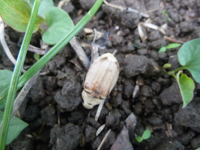
今日は毛虫がいなくて良かったです。コガネムシとカナブンがいました。
更新日 : 2018/07/21
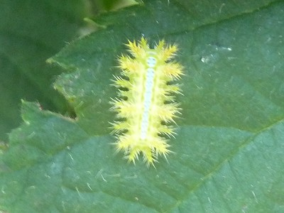
イラガですね。近寄りたくないですが、ブラックベリーの収穫をあきらめるのはもったいないので慎重に摘み取り作業をしました。
作業後、肌に異常がなかったのでよかったです。
更新日 : 2019/06/02
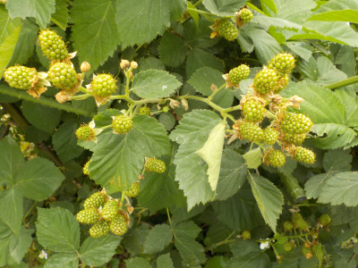
実が沢山出来てます。
ブラックベリーって余程のことがないかぎり不作がない気がする。
更新日 : 2019/07/13
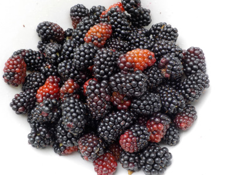
種取りがとっても面倒なブラックベリージャムです。何か作業が楽になる方法がないか検討しました。
今まではジャムを作ってから金ザルを使って種を取っていたんですが、これだと粘性が強くなっているので労力が必要でした。後、種と一緒に砂糖も捨てることになりもったいなかったです。
今回はジューサー（ミルサーっていうのかな、ミキサーっていうのかな？）で液体にしてから金ザルで種を取りました。
ジューサだと20秒くらいで液体になりました。すぐですね。
液状なので種の分離はジャムにしてからの時より簡単でした。いままでの半分の時間も使わないです。
始めからこっちの方法に出会っていればよかった。最初検索で見つけた作り方はクックパッドだったかな？それ見て作ってたんですが失敗でした。
実際に作ってみて、問題があったら再検索してよりよい方法を探さないといけませんね。
今回はジュース状態から砂糖をいれてジャムにしたので、煮詰めるのがとても簡単でした。
砂糖少な目で、少し酸っぱくて濃い感じの美味しいジャムができました。
2020/06/28
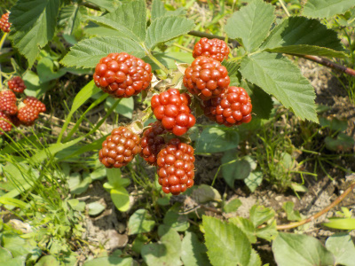
実が赤くなりました。もうちょっとで黒くなって食べれますね。
冷凍庫にスペースがあまりないので、収穫したらドンドン加工して食べるつもりです。
更新日 : 2020/07/12
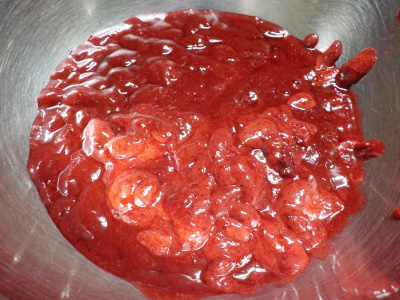
ミキサーにかけて、金ザルで種を取った状態です。ドロっとしています。
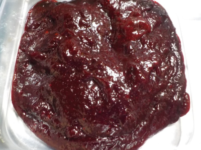
砂糖を入れて煮詰め、柚子の汁で固めました。
ちょっとハードなジャムが完成しました。濃い味のゼリーです。
ヨーグルトに混ぜたりパンにぬって食べれないので失敗かな？味自体は美味しいので、お菓子としてそのまま食べようと思います。
ブラックベリーはほぼ生食はしないな。
【おいしいものを食べよう。】【たくさん寝よう。】
【ソロ活をしよう!】【季節感のあることをしよう。】【動画視聴はほどほどに。】【当サイトの全てのコンテンツは無断転載禁止です。】